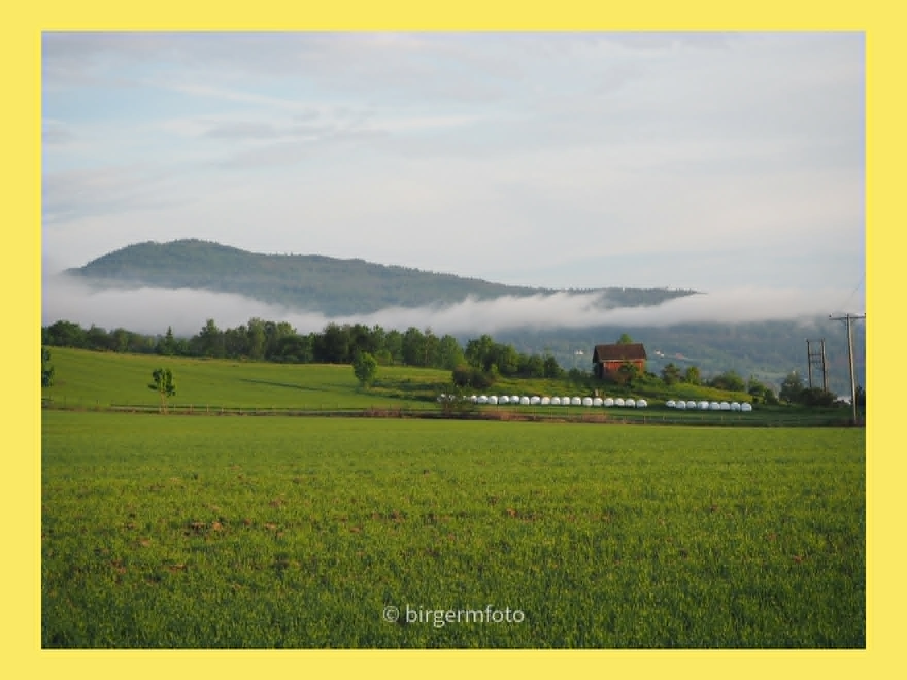

Frilansfotograf
Sport, natur og øyeblikk
Jeg fotograferer først og fremst sport, men også natur, mennesker og små øyeblikk fra områdene rundt meg.
Se gallerietVikerkleiva foto
Fotografier med nærhet til motivet
Her finner du et utvalg av arbeidene mine. Galleriet vil bli oppdatert med flere bilder og kategorier etter hvert.